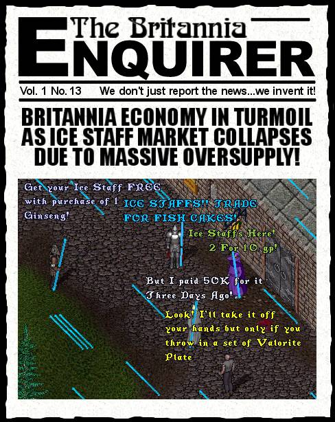

Wow! I have not seen a feeding frenzy like this since Black Dye Tubs first came out. And what is this new treasure that everyone is ready to give all their worldly wealth for? Is it a Furniture Dye Tub? Perhaps a Dragon Statue? Maybe a Full Set of Phoenix Armor? Nope, guess again. It is a thing that can only be described as looking like a flourescent tube that makes funny noises when you say the correct magic words and ninety percent of the people carrying them probably havent been within 10 UO miles of an Ice Dungeon since they started UO. Now I am not gonna get off on a rant here but Man, sometimes this game just boggles my mind. I mean, ice staffs, ranger armor, cow statues, singing crystal balls, black dye tubs, no-draw backpacks, incorrectly colored stuff, backwards stuff, dried flowers, valentines candies, the list goes on and on. UO is starting to look less like a medieval RPG and more like the latest edition of the Antiques Travelling Road Show every day. Now I am not saying that I dont play the rares game too, hell ImaNewbie and the L.O.S.E.R.S. have our own museum full of that crap (and before you ask, YES, ImaNewbie has an ice staff, hehe). Just kinda pointing out what the next generation of RPG makers better make a note of if they want to survive. Here is the short list.
Arggh, I am making myself nauseous, time to sign off. See you ingame.... Pssst! Wanna buy a really k3wL crystal ball that when you click it makes that "farting" noise like a mis-cast spell? I am selling it on EBAY for only $5000 USD. Impress your friends!! (j/k)
course that's just my opinion ... I could be wrong! :)
later...Tryon